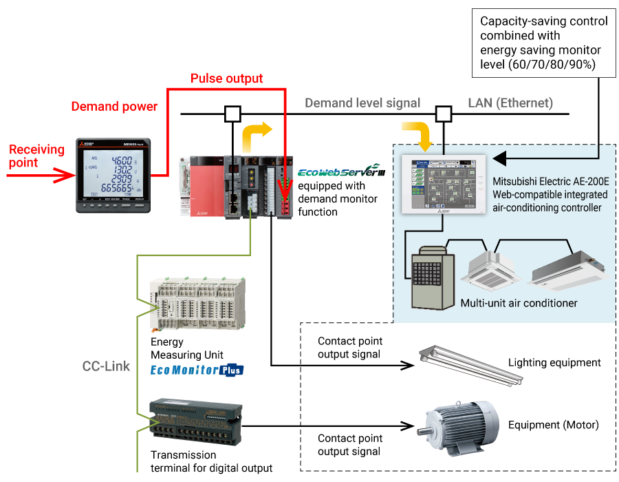

Energy Saving Supporting DevicesEnergy Saving Data Collecting Servers

It Can Be Connected at MODBUS RTU/TCP Communication
- Using the LAN interface (CH2) of EcoWebServerIII, realize MODBUS TCP communication.
(As with the case of MC protocol communication) - Using the LAN CH2 of EcoWebServerIII, via MODBUS TCP ⇔ MODBUS RTU converter, realize MODBUS RTU communication. *1

- *1MODBUS TCP ⇔ RTU converter is required for MODBUS RTU communication.
That has been functionally verified is SI-485 MB, SI-485 MB2 by LINEEYE CO., LTD. - *2Only EMU4-FD1-MB can be connected and it needs an optional unit (Model name: EMU4-CM-MT)
- *3It needs an optional unit (Model name: ME-0000MT-SS96)
Detect Target Excess and Facility Abnormality Instantaneously by Alarm Output and Email Notification
- It is possible to send an email notification and an alarm output in case of the occurrence of target excess or facility abnormality, so you can catch a condition change at once. It is possible to accelerate the PDCA cycle from problem finding to measure taking and improve the productivity.
- Smartphones and tablets are supported, so you can check the alarm contents and email notifications on the site.
Alarm Output/Email Notification

- *1Ask the network administrator (or administration department) in your company for details.
Connection With Mitsubishi GOT Display Device
- Information collected on the EcoWebServerIII can be displayed on the GOT.
- By displaying the alarm state/measuring value for energy information/demand, real-time monitoring at the site and urgent countermeasures are possible.
* Demand alarm function can be realized Only MES3-255C-DM-EN.
Energy-Saving Air Conditioning Operation Realized With Integrated Air-Conditioning Controller
* MES3-255C-DM-EN only
- Demand control possible by interconnecting with Mitsubishi Electric Web-compatible integrated controller "AE-200E", "G-150AD", etc.
Additionally, automatic control of load possible through contact point output via main unit of EcoWebServerIII and CC-Link.
